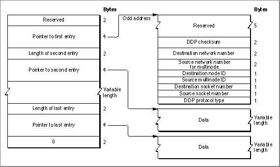

Legacy Document
Important: The information in this document is obsolete and should not be used for new development.
Important: The information in this document is obsolete and should not be used for new development.


Sending Packets Using a Multinode
You can use a multinode to send packets that contain data that you have already received; in this case you forward the data from the multinode using theNetWritecall. You can also use the multinode to send original data using theNetWritecall. In both cases, you must use a structure called the write-data structure to indicate to the .MPP driver where the DDP packet header portion and the data portion to be sent are stored. Why you send data is particular to your application. For example, if your application implements AEP, it would send an Echo Reply packet in response to the Echo Request packet that the application receives. For a brief description of using multinode, see the discussion on page 12-5.To send data from the multinode, you perform the following steps:
- Create a write-data structure, as described in the next section, "Preparing a Write-
Data Structure."- Allocate nonrelocatable memory for a multinode parameter block that includes the fields required for the
NetWriteroutine. See "The Multinode Parameter Block" beginning on page 12-18. The multinode parameter block belongs to the .MPP driver for the life of theNetWritecall.- Call the
NetWriteroutine to send the data. You issue theNetWriteroutine as a Device Manager'sPBControlcall. See "NetWrite" beginning on page 12-24 for details on this routine and the parameters it requires.
- Set the parameter block field values belonging to the
NetWritecall, including
the checksum flag (checkSumFlag) parameter. See "Using a Checksum" on page 12-15.- You must set the
csCodeparameter block field to the numeric value of 261 for theNetWriteroutine.
Preparing a Write-Data Structure
The .MPP driver uses a write-data structure that you create to locate the header and data portions of the packet to be transmitted. When you call theNetWriteroutine to send data from a multinode, you pass it a pointer to the write-data structure that you have already prepared. A write-data structure contains a series of pairs of length words and pointers, and each pair indicates the length and location of a portion of the data. The first pair must indicate the DDP header of the packet to be transmitted. It ends with a 0 word.The .MPP driver constructs the packet to be transmitted, building the packet contents from the header and data information that you provide.
The write-data structure that you use for a multinode is similar to the write-data structure that you use to send a packet from a DDP socket except that for a multinode write-data structure, you must also include the source network number and the source multinode ID. This is because the source user node ID of the physical node, which is carried in the frame header, is different from the source multinode ID, which is carried in the DDP packet header. The source address information that you provide identifies the multinode from which you are sending the data. The multinode write-data structure also contains a checksum field that you can set to 0 if you do not want a checksum calculated for this packet. Figure 12-3 shows the write-data structure; it also shows how you must define the header information in the storage that you allocate for it.
You create a write-data structure in one of three different forms:
In many cases, the header and data components of a packet are not stored contiguously, which requires that the write-data structure contain at least two length-pointer pairs. Typically, the data portion is stored as a single block. However, some implementations send blocks of data that are stored separately as parts of the same datagram; if the complete data portion is stored as several separate blocks, then the write-data structure needs to contain a length-pointer pair for each block of data.
- You can provide a single length-pointer pair that identifies one storage block that contains both the header and data information. In this case, the header information must come first, and it must begin at an odd address.
- You can use two length-pointer pairs, one for the header portion and one for the
data portion.- You could also use more than two length-pointer pairs, one for the header, and one for each separate block of data.
Figure 12-3 The write-data structure for a multinode

For the header, you must fill in the following:
- Note
- The header block that the write-data structure points to consists of
16 bytes. The first pointer in the write-data structure must point to an odd address, so if you create the write-data structure in Pascal, the
first byte is not used.
- the destination network number
- the source network number of the multinode
- the destination node ID
- the source multinode ID
- the destination socket number
- the source socket number (if you are forwarding from the multinode a DDP packet that contains an existing value for the source socket number, you can pass that value on in this field)
- DDP protocol type (DDP protocol types 1 through 15 are reserved for use by Apple)
- Note
- A multinode is not associated with a DDP socket. If the source socket field contains a value, it must adhere to the conventions that the AppleTalk DDP protocol specification describes for the use of sockets. For example, this field must not specify socket number 0 ($00); rather the value should be constrained to socket number values belonging to the user-defined range stated in the DDP protocol specification; see Inside AppleTalk, second edition, for this information.
Using a Checksum
The long DDP packet header that you create for a multinode can include a checksum value that is used to verify that the packet data has not been corrupted by memory or data bus errors within routers on the internet. When you call theNetWriteroutine to send data from a multinode, you specify a value for thecheckSumFlagparameter of the multinode parameter block. You use thecheckSumFlagparameter differently to send data from a multinode than how you would use it to send data from a DDP socket, even though in both cases the flag's value controls the use of the long DDP packet header'schecksumfield.Any application that uses a multinode can receive packets through that multinode. The application can then repackage and forward the packet through the serial port and modem to its multinode-application counterpart on a remote system. The multinode application at the remote end can then decode the package and send the packet on through a
NetWritecall to a node on the network or a user-node process on the same machine. An existing packet that is to be forwarded could already contain a checksum value. When you issue theNetWritecall, you can preserve that checksum value and pass it on as part of the header in the packet. You use thecheckSumFlagparameter of theNetWriteroutine for this purpose.
Note that if you want to send a packet that does not include a checksum, you must hardcode the value by setting to 0 the checksum field of the data structure that contains the packet header that you point to from the write-data structure.
- If you do not want the current value in the packet header's checksum field to be altered, you set
checkSumFlagto 0, and the existing checksum value in the DDP header will not be changed. (If a checksum has already been calculated, it will be passed along unmodified.)If you want the checksum for the datagram to be calculated and placed in the DDP packet header'schecksumfield before the .MPP driver transmits the packet, set checkSumFlagto a nonzero number.
- How the Apple Remote Access program uses the checksum flag
- The Apple Remote Access (ARA) program is an example of an applica-
tion that sets thecheckSumFlagflag to 0 in order to preserve a packet's original checksum value. The ARA client multinode can receive a DDP packet addressed to that multinode or a broadcast packet, such as an NBP lookup packet. In either case, the packet is a standard DDP packet that could contain a checksum value. The client ARA software passes the packet on to the ARA software on the server through the serial port and modem. The ARA software on the server node setscheckSumFlagto 0 when it calls theNetWriteroutine to send the packet down from the multinode through the AppleTalk stack and out to a node on the network.